Vizon
↔ Kaydır: döndür · Dokun: büyüt
Bardağını tasarla
Bardağının rengini seç, harflerini yaz ve yazı rengini seç. Bardağın nasıl görüneceğini hemen burada gör.
En fazla 5 karakter. Sembol de 1 karakter sayılır.

EL YAPIMI MONOGRAM ESPRESSO BARDAĞI
Bardağının rengini seç, harflerini yaz ve yazı rengini seç. Bardağın nasıl görüneceğini hemen burada gör.
En fazla 5 karakter. Sembol de 1 karakter sayılır.